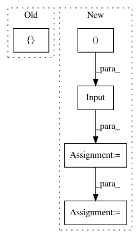

3387546c8b639005e4a3eec2d2560b395c2ef6ba,deer/learning_algos/NN_CRAR_keras.py,NN,encoder_model,#NN#,40
Before Change
Keras model with output x (= encoding of s)
layers=[]
outs_conv=[]
inputs=[]
for i, dim in enumerate(self._input_dimensions):
After Change
// - observation[i] is a FRAME
if len(dim) == 3 or len(dim) == 4:
if(len(dim) == 4):
input = Input(shape=(dim[-4],dim[-3],dim[-2],dim[-1]))
inputs.append(input)
input = Reshape((dim[-4]*dim[-3],dim[-2],dim[-1]), input_shape=(dim[-4],dim[-3],dim[-2],dim[-1]))(input)
else:
input = Input(shape=(dim[-3],dim[-2],dim[-1]))
inputs.append(input)
x=Permute((2,3,1), input_shape=(dim[-3],dim[-2],dim[-1]))(input) //data_format="channels_last"
In pattern: SUPERPATTERN
Frequency: 4
Non-data size: 5
Instances
Project Name: VinF/deer
Commit Name: 3387546c8b639005e4a3eec2d2560b395c2ef6ba
Time: 2018-09-06
Author: vincent.francois@gmail.com
File Name: deer/learning_algos/NN_CRAR_keras.py
Class Name: NN
Method Name: encoder_model
Project Name: balakg/posewarp-cvpr2018
Commit Name: d607af8dc58f85f7000fb9b61e9ebf3c6e4b23da
Time: 2017-04-24
Author: balakg@thousandeyes.csail.mit.edu
File Name: networks.py
Class Name:
Method Name: discriminator
Project Name: inspirehep/magpie
Commit Name: 28b8b9d39f53d8327dbf658048a81b7046ae398f
Time: 2017-10-08
Author: stypka@spotify.com
File Name: magpie/nn/models.py
Class Name:
Method Name: cnn
Project Name: zo7/deconvfaces
Commit Name: 56e79ff2b27a5a83548a51bd5352d3ba8abe0902
Time: 2016-10-07
Author: zo7.flynn@gmail.com
File Name: faces/model.py
Class Name:
Method Name: build_model